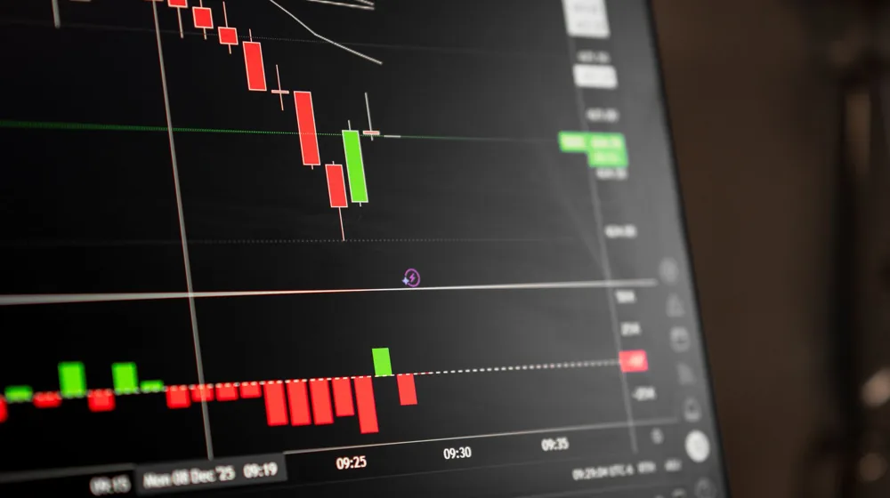

삼성전자 주가, 2024년 투자 전 꼭 알아야 할 3가지 핵심 요소
사진: Alesia Kozik / Pexels (무료 이미지, 출처 표기)
삼성전자 주가, 어떤 요인들이 움직일까?

삼성전자 주가는 단순히 기업의 실적만으로 움직이지 않습니다. 전 세계 경제 상황, 산업의 흐름, 심지어 정치적 이슈까지 다양한 외부 요인들이 복합적으로 작용합니다. 특히 삼성전자는 반도체, 스마트폰, 가전 등 여러 사업 부문을 가지고 있어 각 부문의 실적과 전망이 주가에 미치는 영향이 큽니다.
가장 큰 영향을 미치는 요인 중 하나는 글로벌 경기 사이클입니다. 경기가 좋으면 소비 심리가 개선되어 스마트폰, TV 등 전자제품 판매가 늘고, 기업들의 IT 투자 증가로 반도체 수요도 커집니다. 반대로 경기 침체기에는 소비와 투자가 위축되면서 실적에 부정적인 영향을 미칩니다.
반도체 사이클과 삼성전자 주가의 관계 심층 분석
삼성전자 매출의 상당 부분을 차지하는 반도체 사업은 '사이클'이라는 특성이 있습니다. 반도체는 일정 주기로 공급 과잉과 부족을 반복하며 가격이 오르내리는데, 이는 삼성전자의 실적과 주가에 결정적인 영향을 미칩니다. 특히 메모리 반도체(DRAM, NAND)는 이런 사이클의 영향을 가장 크게 받습니다.
메모리 반도체는 인공지능(AI), 데이터센터, 모바일 기기 등 다양한 분야에서 핵심 부품으로 사용됩니다. 최근에는 AI 기술 발전에 따라 고대역폭 메모리(HBM)와 같은 고성능 반도체 수요가 급증하며 새로운 성장 동력으로 부상하고 있습니다. 이러한 신기술 수요 증가는 반도체 업황 개선에 긍정적인 신호로 작용할 수 있습니다.
투자 전 반드시 알아야 할 핵심 지표와 해석법
삼성전자에 투자하기 전에는 기본적인 기업 분석 지표들을 이해하는 것이 중요합니다. 단순히 주가 흐름만 보고 투자 결정을 내리기보다는, 기업의 가치를 객관적으로 판단할 수 있는 지표들을 활용해야 합니다.
- PER(주가수익비율, Price Earning Ratio): 현재 주가가 주당순이익(EPS)의 몇 배인지를 나타내는 지표입니다. 낮을수록 저평가되었다고 볼 수 있지만, 산업 특성이나 미래 성장 가능성에 따라 적정 PER은 다를 수 있습니다.
- PBR(주가순자산비율, Price Book-value Ratio): 현재 주가가 주당순자산(BPS)의 몇 배인지를 나타냅니다. 기업의 청산 가치 대비 현재 주가를 평가할 때 유용하며, 1 미만이면 장부상 가치보다 주가가 낮다는 의미입니다.
- EPS(주당순이익, Earning Per Share): 기업이 1주당 벌어들인 순이익을 말합니다. EPS가 꾸준히 증가하면 기업의 수익성이 좋아지고 있다는 신호로 해석할 수 있습니다.
- 배당수익률: 현재 주가 대비 1년간 지급된 배당금의 비율입니다. 안정적인 현금 흐름을 중시하는 투자자에게 중요한 지표입니다.
이러한 지표들은 절대적인 기준이 아니며, 과거 수치와 현재 주가를 기반으로 한 것이므로 미래를 보장하지는 않습니다. 투자 결정을 내리기 전에는 반드시 최신 공시 자료와 시장 분석을 참고하여 종합적으로 판단해야 합니다.
개미 투자자가 흔히 하는 실수와 주의할 점
삼성전자는 '국민주'라는 별칭이 붙을 만큼 많은 개인 투자자들이 관심을 갖는 종목입니다. 하지만 잘못된 투자 습관은 손실로 이어질 수 있습니다. 다음은 개인 투자자들이 흔히 하는 실수와 주의할 점입니다.
- 묻지마 투자: 주변에서 좋다고 하니 무작정 매수하는 행위입니다. 자신의 투자 목표와 분석 없이 다른 사람의 말에만 의존하는 투자는 위험합니다.
- 단기적인 시세 추종: 하루하루 변동하는 주가에 일희일비하며 빈번하게 매매하는 것은 수수료와 세금 부담만 키우고 장기적인 수익을 저해할 수 있습니다.
- 분산 투자 부족: 모든 자금을 한 종목에 집중하는 것은 위험 부담을 크게 높입니다. 삼성전자 외에도 다른 산업군의 우량주나 다양한 자산에 분산 투자하여 위험을 줄이는 것이 좋습니다.
- 기업 분석 소홀: 뉴스 기사나 소문에만 의존하기보다, 분기별 실적 보고서, 애널리스트 리포트 등 공식적인 정보를 통해 기업의 현황과 전망을 직접 확인하는 노력이 필요합니다.
삼성전자 투자, 전문가들은 어떻게 볼까?
증권사 애널리스트나 투자 전문가들은 삼성전자에 대해 다양한 관점으로 분석합니다. 이들의 리포트는 참고 자료가 될 수 있지만, 맹신해서는 안 됩니다. 전문가들은 주로 글로벌 경제 전망, 반도체 산업의 수요와 공급, 경쟁사의 동향, 그리고 삼성전자의 신기술 개발 및 투자 계획 등을 종합적으로 고려하여 목표 주가를 제시합니다.
특히 메모리 반도체 업황의 회복 시점과 AI 반도체 시장에서의 경쟁력, 파운드리(반도체 위탁 생산) 사업의 성장세 등이 중요한 분석 포인트로 다루어집니다. 이러한 분석을 참고하되, 본인 스스로 기업의 가치와 잠재력을 판단하는 안목을 기르는 것이 중요합니다.
자주 묻는 질문: 삼성전자 배당과 주식 분할은?
Q: 삼성전자 배당금은 언제 지급되나요?
A: 삼성전자는 분기 배당을 실시하며, 매년 2월, 5월, 8월, 11월에 배당금을 지급합니다. 각 분기의 배당기준일은 분기 말일(3월, 6월, 9월, 12월 말)이며, 배당락일은 배당기준일의 2거래일 전입니다. 정확한 배당 일정과 금액은 삼성전자 IR 홈페이지 또는 증권사 공시를 통해 확인하는 것이 가장 정확합니다.
Q: 삼성전자 주식 분할은 주가에 어떤 영향을 미쳤나요?
A: 삼성전자는 2018년 5월 액면분할을 통해 1주를 50주로 분할했습니다. 이는 주당 가격을 낮춰 소액 투자자들도 쉽게 접근할 수 있게 하여 주식 거래를 활성화하는 데 목적이 있었습니다. 단기적으로는 거래량 증가와 투자자 유입 효과를 가져올 수 있으나, 장기적인 기업 가치에는 직접적인 영향을 주지 않습니다. 주식 수가 늘어난 만큼 주당 가격은 낮아지므로 전체 시가총액은 동일합니다.
🔗 이 글도 함께 보면 좋아요: 성공적인 부동산 투자 전략과 초보자를 위한 내집마련 가이드